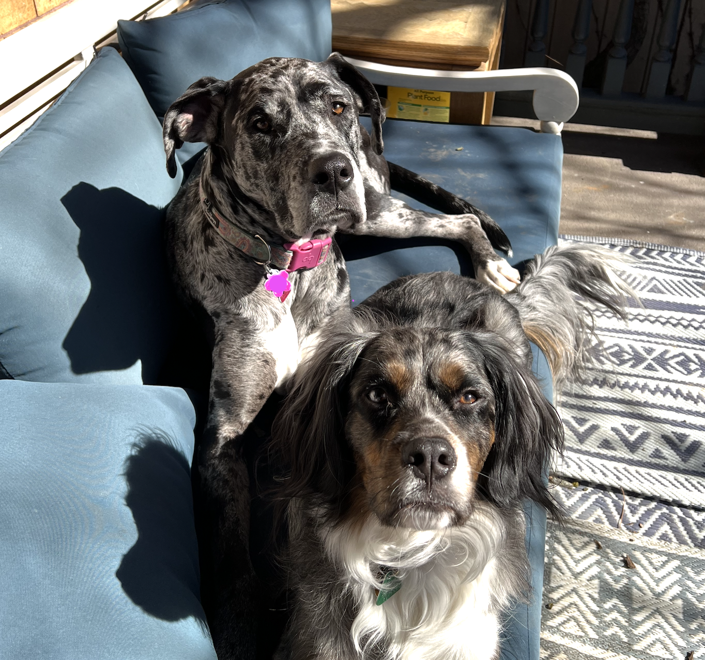
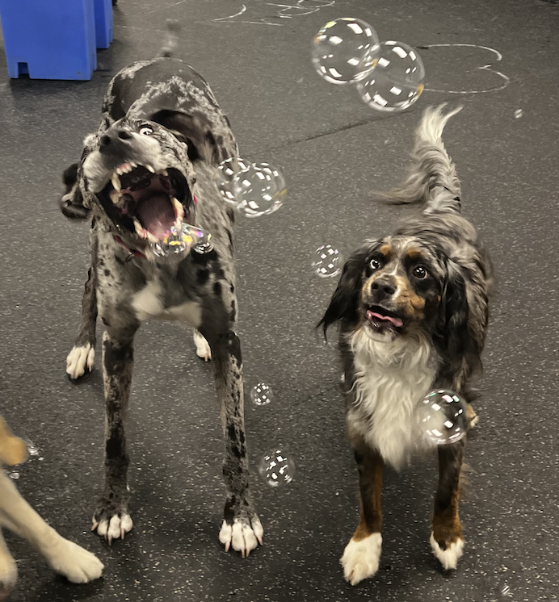

About
Intro Link to heading
Hi, I’m Juan, a software engineer focused on building backend systems and distributed applications. I primarily work with Go, PostgreSQL, and Kafka, and I enjoy designing reliable, scalable software that solves real-world problems. I’m always interested in learning new technologies and choosing the right tools to build simple, effective solutions.
Projects Link to heading
NIStudies Link to heading
A web platform for exploring and analyzing functional MRI (fMRI) research studies. NIStudies helps researchers and students discover, browse, and better understand publicly available neuroimaging datasets.

SFDCClient Link to heading
An open source Go package that simplifies communication with the Salesforce REST API. It provides an HTTP client wrapper with built-in support for the Salesforce OAuth 2.0 JWT Bearer Flow, enabling secure server-to-server authentication through Connected Apps.
Dogs Link to heading

